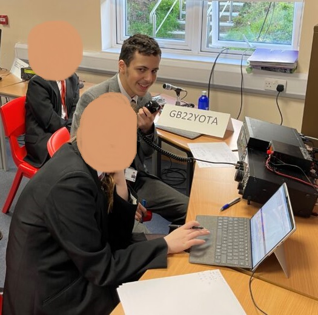

This event was always one of the highlights of the year when it came around - and that wasn't just because it was a day off school sanctioned by the headteacher! At the time of the Tim Peake contact I don't think I really appreciated the technology which made it possible, but by attening the Youngsters on the Air event in 2016, I began to see quite how cool the technology is. Within a year, I had earned my Foundation licence (and a special thanks must be given to the school for providing all the training and helping us through the process) and so the following year, I was able to take the mic on my own and begin broadcasting for this yearly event.
We were lucky in that the school has a whole suite of transmission equipment on the roof which was available for us all to use - technical details here for those interested - throughout the year. We also had a strong link with the local amateur radio club, Verulam ARC and some of their members came down every year to allow us to set up a data station and run some extra activities for those not transmitting and watching the transmission. A special event callsign of course attracted plenty of interest, which was definitely for the best as the sun was never particularly kind to us during the years I was part of the event, and I think that definitely helped hook a few of the younger students into the hobby.
Whilst the transmission part was certainly fun, as it was hard to find a significant chunk of time during the school day to properly get on the air, the best bit was talking to other students and showing them quite what we are able to do. Whilst we always got a couple of complaints that the sound was so crackly, it was nice to mentor some of them as they worked towards their Foundation licence, and then of course operate alongside them in subsequent years.